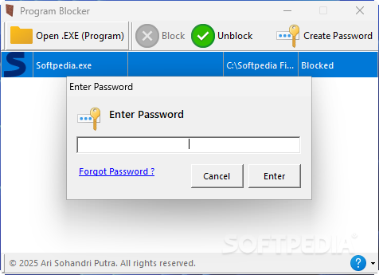

Program Blocker
 Program Blocker is a lightweight security tool that prevents unauthorized access to your important applications. Perfect for shared computers, this portable utility lets you password-protect any program executable with just a few clicks.
Key Features
- Password Protection for Programs - Lock any application by securing its executable file with a password, ensuring only authorized users can run it.
- Portable Operation - Requires no installation - simply run the tool, set your password, and start protecting your applications immediately.
- Security Question Recovery - Includes a security question feature to help you recover access if you forget your password.
- Universal Compatibility - Works with all types of executable files including productivity software, games, and system utilities.
Frequently Asked Questions
Is Program Blocker free?
→ Yes, Program Blocker is 100% Free.
Does it work on all programs?
→ Yes, Program Blocker can secure any executable file (.exe) including Microsoft Office applications, games, design software, and more.
What if I forget my password?
→ The security question feature allows you to recover access if you forget your password, while maintaining security.
Can I use it without installing?
→ Absolutely. Program Blocker is completely portable and requires no installation - just run it from any location.
|